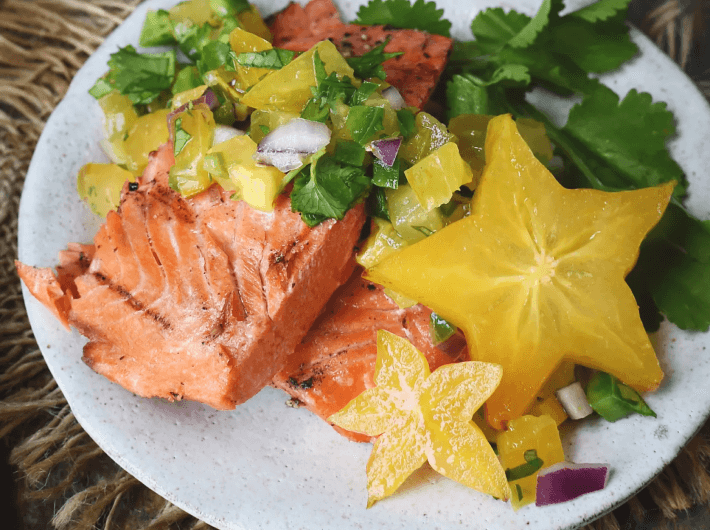

Lachs mit Sternfrucht
(20 Min., 4 Port., F: 8 g, K: 2 g, E: 22 g)

Zutaten
- 500 g wild gefangener Lachs, 1 1/2 TL Zitronensaft, 1 große Sternfrucht, 1 grüne Chilischote, 2 TL rote Zwiebel, 2 TL Koriander, 2 TL Olivenöl, Salz & Pfeffer
Vorbereitung
- Lachs waschen und trocken tupfen. Sternfrucht in mundgerechte Stücke schneiden und Kerne entfernen (wenn gewünscht: einige Stücke als Dekoration in Scheiben erhalten). Chilischote und Koriander in kleine Stücke schneiden. Zwiebel fein hacken.
- In einer Schüssel Zitronensaft, 1 TL Olivenöl und Salz vermischen. Sternfrucht, Chilischote und Koriander dazugeben und gut vermischen. Abdecken und in den Kühlschrank stellen.
- Lachs mit dem verbleibenden Olivenöl einreiben und mit Salz & Pfeffer würzen.
Braten
- Pfanne erhitzen und Lachs gar braten.
Servieren
- Lachs mit Sternfrucht-Salsa garnieren und servieren.
Originalrezept unter: Simplysohealthy.com